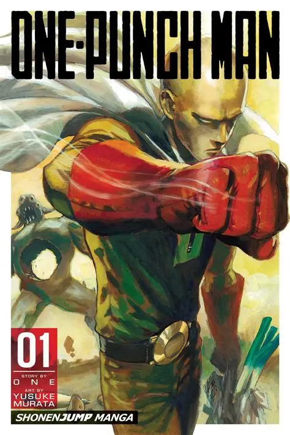

Un golpe.
Un héroe calvo.
Bienvenido al portal no oficial de One Punch-Man. Conoce a Saitama y al resto de la Asociación de Héroes, revive la historia por arcos, explora la galería y postúlate para el próximo examen de ingreso. Ningún monstruo dura más de un golpe.

Un héroe que ya no siente nada al ganar
Saitama es un héroe que entrenó tan duro que perdió todo su cabello... y se volvió capaz de derrotar a cualquier enemigo de un solo puñetazo. El problema: ya no siente la emoción de la batalla, y nadie parece reconocer su verdadero poder. Junto a Genos, su discípulo cyborg, se abre paso en la burocrática Asociación de Héroes buscando, en el fondo, un rival que por fin le haga sudar la frente.
Bajo su tono cómico, la serie es una sátira de los relatos heroicos clásicos: el poder absoluto no resuelve el aburrimiento, y ser reconocido importa menos que hacer lo correcto.
Combate resuelto en un instante
Cada pelea de Saitama termina en un solo golpe, invirtiendo la tensión típica del shonen.
Burocracia heroica
Los héroes se clasifican por rango (S, A, B, C) y compiten por popularidad ante la Asociación.
Humor deadpan
El tono serio de Saitama frente a situaciones absurdas es el motor cómico de la obra.